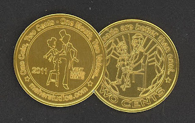

Coin comment
9/24/2011
{kind=link}

"I couldn't let another minute go by without thanking you for your kind gift of two of the newest coins. Our Canadian dollar and two dollar bills have been out of use now for several years, and we have a one dollar coin the same size, but much more dull than the 2 cent souvenir coins you've sent to me."Our dollar coin has a loon on the back, and has been called a 'loonie' almost from day one. Our two dollar coin is the same size, but with a copper centre, and a nickel-coloured outer circle. It became a 'toonie' right away. In many ways they're convenient for parking, etc., but they necessitate carrying a larger change purse that tends to get quite heavy in the pockets from time to time. The two-cent souvenir reminded me of our 'loonies' right away. Thanks again and Blessings."
Canon John Jordan
* * * *
From Mr. D: You are very welcome. I may be the "looney" here for having the vent coins minted in the first place, but I've enjoyed the project with no regrets. And if anyone is reading this who does not own one of the two-cent souvenir ventriloquist coins, all you have to do is email me and request one. They're sent free and come with no obligation other than to simply enjoy them.